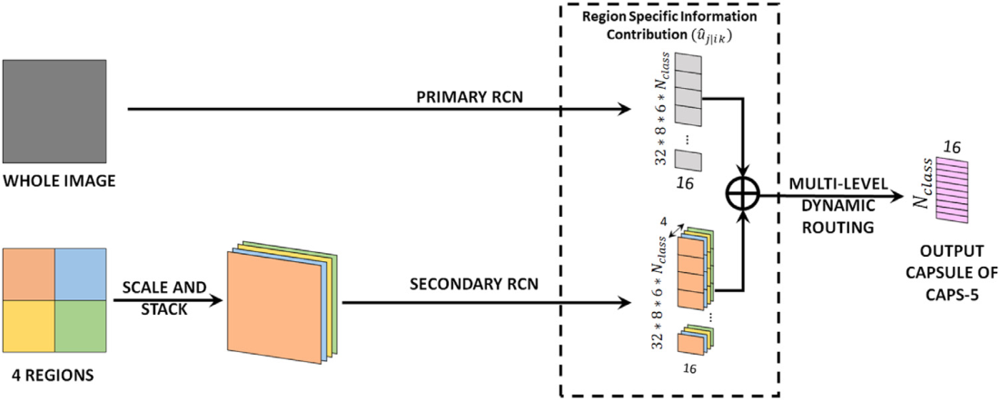
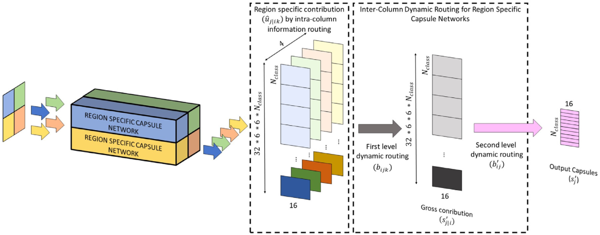

Letting small image regions negotiate before a capsule network decides
Many image classifiers are really committees. Several small networks each look at a different part of the picture, and a final step combines their answers. Usually that step is a vote or an average. We asked whether the members could instead negotiate, and we built a two-stage routing scheme for capsule networks that lets them do so.
The problem
A standard convolutional neural network slides small filters over an image. At every spot a filter reports one number: how strongly its pattern appears here. One number can say 'present' or 'absent', but it says nothing about how the feature is bent, tilted or stretched.
Capsule networks replace that single number with a short list of numbers, called a vector. They also add a rule named routing by agreement. A low-level capsule sends its output to the higher-level capsules whose own output agrees with it. We hoped this would model how parts fit into a whole, even when the parts can deform independently.
The second ingredient is the multi-column network. Each column is a small network that reads a different region of the image: the whole picture, its quarters, and so on. Columns are usually trained separately and combined by majority vote or by averaging their probabilities. Both keep only the strongest opinion of each column. Weak opinions that happen to agree with each other are thrown away.
The idea
We made every column a small capsule network and replaced the vote with routing. Because small parts and whole objects are different levels of detail, we split the routing into two phases. The first phase deals with micro-level features from the individual regions. The second phase gathers the result into the macro-level answer for each class.
How it works
Each region goes through its own region-specific capsule network. It has one convolutional layer with 256 channels, followed by a capsule layer of 32 blocks of 8-number vectors. We tried two designs. Caps-5 has five columns: the whole image plus its four quadrants, each scaled up to full size. Caps-21 adds the sixteen smaller tiles, so it has 21 columns.

In phase one, the capsules of all regions vote on what the image shows, and votes that agree with each other get more weight. This produces intermediate capsules that summarise the whole image from the regions' consensus. In phase two, those intermediate capsules are routed to the final class capsules, again by agreement. Picture a panel of experts who each see one corner of a photo. They first reconcile their notes with each other, and only then does a chair write down the verdict.

What we found
We tested on seven public datasets: handwritten digits in Bengali, Devanagari, Arabic and Telugu (only 2,000 to 4,000 training images each), plus Fashion-MNIST (clothing), Not-MNIST (letters A to J in many typefaces) and SVHN (house numbers from street photos) (Table 3). No data augmentation was used.
Caps-5 beat both a plain capsule network and a LeNet5 baseline on all seven datasets (Table 4). Caps-21 beat LeNet5 everywhere but trailed the plain capsule network on the Bengali and Devanagari digits and on SVHN. On the Telugu digits, Caps-5 reached 98.00% against 95.40% for the plain capsule network and 92.20% for LeNet5. Caps-5 did well on the digit sets and SVHN, while Caps-21 did better on the non-digit sets with more variation inside a class: 91.27% on Fashion-MNIST and 95.66% on Not-MNIST.
We also built ordinary multi-column convolutional networks with the same inputs. On SVHN, Caps-5 scored 90.19% against 81.87% for the five-column convolutional version, and the 21-column version fell to 57.79% (Table 5). The paper backs these comparisons with McNemar mid-P tests, a check on whether two classifiers really differ. For some pairs, mostly on the small digit sets, the difference is not statistically significant (Table 6).
Next we replaced our routing with majority voting or probability averaging. The paper concludes that the two-phase routing aggregates opinions better. The gap was largest on SVHN, where Caps-5 scored 90.19% with our routing, 87.71% with voting and 87.59% with averaging (Table 7). Majority voting did win on Fashion-MNIST for Caps-5, 91.49% against 90.96% (Table 7).
Why can routing beat voting? When we tested each region alone, the full image was best, the quadrants slightly weaker and the small tiles weakest. Yet in the routing weights, many small regions had contributions comparable to the full image (Figs. 6 to 8 of the paper). The paper's explanation is that voting combines the strongest opinions of independent classifiers, while routing can prefer weaker opinions when they form a stronger consensus.
What it does not do
Our networks do not yet reach the level of state-of-the-art convolutional networks. The paper names speed as the main bottleneck: like other capsule networks, ours train slowly, which limits scalability. Without augmentation, Caps-5 and Caps-21 reached only 68.87% and 68.97% on CIFAR-10 (Table 8). In that comparison the paper reports MS-CapsNet as the best method, and notes that its data loading includes pre-processing and augmentation that ours did not. When we used the MS-CapsNet data loader, our CIFAR-10 numbers rose substantially.
We meant the two-level scheme as a step toward deeper capsule networks with several routing layers. It could in theory be extended to more levels, but that is still computationally expensive, so hierarchies with more levels are left for future work.
Sources
The figures and tables listed here are taken from the paper cited at the top of this page; the numbers quoted in the text come from the paper too.
- Figures: Fig. 4, Fig. 2
- Tables: Table 3: the seven datasets with training and test set sizes; Table 4: accuracy of Caps-5, Caps-21, a plain capsule network and LeNet5 on each dataset; Table 5: accuracy of Caps-5 and Caps-21 against five- and 21-column convolutional networks; Table 6: McNemar mid-P significance tests for the comparisons; Table 7: our routing against majority voting and probability averaging; Table 8: comparison with other capsule network variants on Fashion-MNIST and CIFAR-10
Acknowledgements
This work was supported by the project sponsored by SERB (Government of India, order no. SB/S3/EECE/054/2016, dated 25/11/2016), and was carried out at the Centre for Microprocessor Application for Training Education and Research, CSE Department, Jadavpur University.
How to cite the paper
B Mandal, R Sarkhel, Swarnendu Ghosh, N Das, M Nasipuri (2021). Two-phase dynamic routing for micro and macro-level equivariance in multi-column capsule networks. Pattern Recognition, Vol. 109, 107595 · Elsevier.